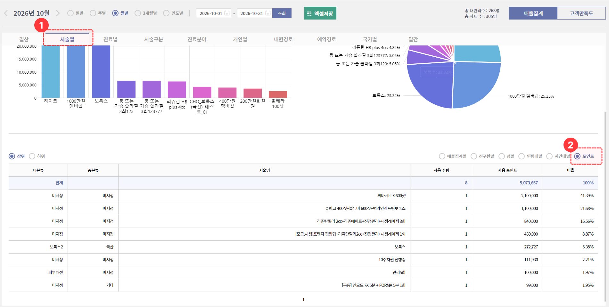

고객 포인트를 차감하고 싶어요.
[고객관리] > [포인트관리] > 고객정보 검색 후 우클릭 ‘포인트 사용/적립 현황’ or 고객 차트 → 고객정보 > 포인트 영역 더블클릭하여 포인트 관리 창을 열어주세요.
- [포인트 등록] 버튼을 누른 후
- [사용] > 사용할 포인트 금액을 입력하고
- 기타 메모 입력 란에 사유를 입력해 주세요.
- 확인 버튼을 누르면 반영됩니다.

고객이 보유한 포인트(P)를 삭제하고 싶어요.
포인트 삭제는 아래 경로를 통해 삭제가 가능합니다.
- [고객관리] > [포인트관리] > 고객정보 검색 후 우클릭 ‘포인트 사용/적립 현황’ or 고객 차트 → 고객정보 > 포인트 영역 더블클릭
- 상단에서 조회 기간 선택 후 [조회]
- 조회된 리스트에서 삭제할 내역에 우클릭 → [삭제] 클릭
삭제 후 하단의 잔여 포인트가 자동으로 재계산됩니다.

고정 CRM은 무엇인가요?
고정 CRM은 특정 상황이 발생했을 때 고객에게 자동으로 발송되는 메시지를 설정하는 기능이에요.
접수·예약·진료 등 정해진 시점마다 병원이 직접 문자를 보내지 않아도, 설정해 둔 대로 자동 발송됩니다.
💡 [CRM 관리]와 무엇이 다른가요?
고정 CRM은 상황별로 자동 발송되는 메시지를 설정하는 기능이고, CRM 관리는 시술에 따른 재방문 안내 등 원하는 캠페인을 만들어 발송하는 기능이에요.
⚠️ 먼저 템플릿을 등록해 주세요
고정 CRM에서는 메시지 내용을 직접 작성할 수 없어요. 아래 메뉴에서 미리 등록한 템플릿을 불러와 사용하는 방식입니다.
- [설정] > [문자 템플릿관리]
- [설정] > [알림톡 템플릿관리]
- [설정] > [브랜드톡 템플릿관리]
알림톡 템플릿은 카카오 승인이 필요해요!
알림톡은 카카오 측의 승인 절차를 거쳐야 하며, 영업일 기준 2~3일이 소요됩니다. 일정을 여유 있게 잡고 미리 등록해 주세요.
설정 방법
- [고객관리] > [고정 CRM] 으로 이동합니다.
- 설정할 메시지 항목을 찾습니다. (예: 접수안내, 예약안내 등)
- [불러오기] 를 눌러 등록해 둔 템플릿을 선택합니다.
- 전송종류를 선택합니다.
종류 설명 즉시발송 해당 상황이 발생하면 바로 발송됩니다. 자동발송 지정한 시각에 자동으로 발송됩니다. 수동발송 담당자가 직접 발송 시점을 선택해 보냅니다. 설정안함 발송하지 않습니다. - 자동발송을 선택한 경우, 전송시간을 지정합니다. (예: 오전 09시 30분)
- 우측 하단 [저장하기] 를 눌러 저장합니다.
고정CRM 설정 값이 궁금해요.
| No. | 이름 | 발송 조건 (이때 발송돼요) | 선택 가능 전송종류 | 전송종류별 발송 시점 |
|---|---|---|---|---|
| 1 | 접수안내 | 접수 팝업에서 ‘접수 안내’ 체크박스 선택 후 접수 시 (단, 기존 예약 건을 접수하는 경우만, 신규·재접수 미발송) | • 즉시발송 • 설정안함 | • 즉시발송: 접수 저장 직후 즉시 (시각 설정 시 당일 그 시각) |
| 2 | 호출하기 | 대기 현황판에서 환자 우클릭> [호출하기] 버튼 클릭 | • 즉시발송 • 설정안함 | • 즉시발송: 대기현황판> 고객카드 우클릭> [호출하기] 버튼 클릭 시 |
| 3 | 신규 환자 인사 | 상담탭/진료탭 [저장] 시 (임시저장 제외) 첫 내원(신환)인 경우 (이력 있으면 중복 차단) | • 자동발송 • 수동발송 • 설정안함 | • 자동발송: 설정 시각(미설정 시 즉시) • 수동발송: [고객관리]> [CRM 수동 발송] 에서 발송/처리로 가능 |
| 4 | 고객만족도평가 | 상담탭/진료탭 [저장] 시 (임시저장 제외), 내원 1건당 1회 | • 즉시발송 • 수동발송 • 설정안함 | • 즉시발송: 저장 기준 즉시 또는 [관리자]> [옵션설정] >+1/+3/+5시 ◦ 23~06시 → 익일 10:00 이월 • 수동발송: [고객관리]> [CRM 수동 발송] 에서 발송/처리로 가능 |
| 5 | 진료 지연 안내 | 현재 사용하지 않는 코드 | ||
| 6 | 사전문진표 | 신규 예약 등록 시(예약 변경 시 미발송) | • 즉시발송 • 수동발송 • 설정안함 | • 즉시발송: 신규 예약 등록 즉시 • 수동발송: [고객관리]> [CRM 수동 발송] 에서 발송/처리로 가능 |
| 7 | 예약취소 | 예약 취소 처리 시 | • 즉시발송 • 설정안함 | • 즉시발송: 취소 처리 즉시 |
| 8 | 예약변경 | 예약 일시 변경 시 | • 즉시발송 • 설정안함 | • 즉시발송: 변경 저장 즉시 (예약캘린더 드래그 이동은 확정 2분 뒤) |
| 9 | 예약안내 (내원 당일) | 예약 등록·변경 저장 시(당일 토글 ON) — 당일 등록 건 미발송 | • 자동발송 • 수동발송 • 설정안함 | • 자동발송: 예약일 당일 + 설정 시각(미설정 10:00), 예약시간이 더 이르면 30분 전 • 수동발송: [고객관리]> [CRM 수동 발송] 에서 발송/처리로 가능 |
| 10 | 예약안내 (내원 전일) | 예약 등록·변경 저장 시(전일 토글 ON) — 예정시각이 미래일 때만 | • 자동발송 • 수동발송 • 설정안함 | • 자동발송: 예약일 하루 전 + 설정 시각(미설정 10:00) • 수동발송: [고객관리]> [CRM수동 발송] 에서 발송/처리로 가능 |
| 11 | 예약안내 (즉시) | 예약 등록 및 외부 예약 확정 즉시 | • 즉시발송 • 수동발송 • 설정안함 | • 즉시발송: 예약 등록·승인 즉시 • 수동발송: [고객관리]> [CRM 수동 발송] 에서 발송/처리로 가능 |
| 12 | 사용 포인트 안내 | 포인트 화면 [문자발송] 버튼(수동) 수납·상담 저장 자동발송 없음 | • 즉시발송 • 설정안함 | • 즉시발송: 버튼 발송 동작 즉시 |
| 13 | 방문약도 | 신규 예약 등록 시 (예약변경 시 미발송) | • 즉시발송 • 수동발송 • 설정안함 | • 즉시발송: 신규 예약 등록 즉시 • 수동발송: [고객관리]> [CRM 수동 발송] 에서 발송/처리로 가능 |
| 14 | 미방문 안내 | 예약 노쇼 후 부도 처리 시 | • 즉시발송 • 설정안함 | • 즉시발송: 부도 처리 즉시 |
동일한 고객 정보로 차트가 중복 생성되었어요. 차트를 통합해 주세요.
차트 통합(병합, 합치기)은 고객센터를 통해서 처리가 가능해요.
고객명, 차트 번호와 함께 고객센터로 문의해 주세요!.
모션E 상단 [고객센터] > [문의하기] > [상담원 연결] 버튼을 눌러 연결이 가능해요.

등록한 고객을 삭제하고 싶어요.
[고객관리] > [고객리스트] > 이름 또는 고객정보를 입력 후 [조회] > 조회된 고객 체크박스를 선택하신 후 우측 상단의 [선택고객삭제] 버튼을 눌러주세요.
고객 삭제 시 등록된 고객 정보, 포인트 적립·사용·차감 내역 등 고객 관련 기록은 함께 삭제되며 복구가 불가하니 이점 유의하여 진행해 주세요.
※ [선택고객삭제] 버튼은 관리자 권한이 부여된 계정에서만 가능합니다. 버튼이 보이지 않는 경우, 관리자에게 요청해 주세요.

브랜드톡 메시지는 어떻게 발송하나요?
브랜드톡은 고객관리 화면에서 대상 고객을 조회한 뒤 문자발송 기능을 통해 발송합니다.
■ 발송 방법
- [고객관리] > [고객검색]에서 발송할 대상을 조회하여 고객 리스트를 확인합니다.
- 대상 고객을 선택한 후 [문자발송]을 클릭합니다.
- 발송 유형에서 ‘브랜드톡’을 선택하고 메시지 내용을 입력합니다.
- 광고 체크박스를 선택한 후 발송합니다. (브랜드톡은 광고성 메시지이므로 필수)
■ 발송 방식 안내
- 카카오톡 채널(플러스친구)을 추가한 고객 → 브랜드톡으로 발송됩니다.
- 채널을 추가하지 않은 고객 → 대체 문자(SMS/LMS)로 자동 발송됩니다.
💡 참고
브랜드톡은 광고성 메시지에 해당하므로, 발송 전 반드시 광고 체크박스를 선택해 주세요. (미선택 시 법적 문제가 될 수 있습니다.)

신환(고객)등록은 어떻게 하나요?
두 가지 방법으로 등록하실 수 있습니다.
1. [고객관리] > [고객등록] 경로에서 고객 정보를 입력한 후 등록합니다.
2. [대시보드] 좌측 검색창에 고객 정보(이름·연락처)를 검색하여 이미 등록된 고객인지 먼저 확인합니다. 조회되는 정보가 없으면 [환자 등록 후 예약]을 눌러 고객 정보를 입력한 뒤 등록해 주세요.
등록 순서
① 고객 정보 입력 — 이름·주민번호·연락처 등 정보를 입력합니다. (차트번호와 이름은 필수 입력 항목입니다.)
② 하단 버튼 선택 — 상황에 맞게 [등록] · [등록 후 예약] · [등록 후 접수] 중 선택합니다.
③ 등록 완료 — “고객 등록이 완료되었습니다” 안내가 표시되면 [확인]을 눌러 마칩니다.
💡 Tip
매출 통계는 고객 정보에 등록된 값을 기준으로 구분됩니다. 외국인 여부·내원경로 등 최대한 많은 정보를 입력해 두시면, 추후 병원에서 통계·마케팅 등 다양하게 활용하실 수 있습니다.

오늘 내원한 고객의 촬영한 진료사진 리스트를 보고 싶어요.
[고객관리] > [진료사진/펜차트/동의서] 메뉴에서 오늘 예약·내원한 고객의 리스트를 확인할 수 있어요.
💡 진료사진·펜차트·동의서 이미지가 등록된 고객만 목록에 표시됩니다.
고객 조회 방법
화면 좌측에서 원하는 방식으로 고객을 조회할 수 있어요.
- [예약/내원객] — 오늘 예약·내원한 고객 중 이미지가 등록된 고객이 표시됩니다. 날짜 변경으로 다른 날짜도 조회할 수 있어요.
- [북마크] — 북마크한 고객으로 조회
- [고객검색] — 이름·차트번호 등으로 직접 검색
사진 확인 방법
- 좌측 리스트에서 고객을 선택하면 우측에 진료사진이 표시됩니다.
- 날짜별 / 카테고리별 탭으로 정렬해 볼 수 있어요.
- 상단 탭에서 [진료사진] / [펜차트] / [동의서] 를 전환하며 확인할 수 있습니다.
사진으로 할 수 있는 작업
우측 상단 버튼으로 아래 작업을 할 수 있어요.
- [비교 보기] — 시술 전후 사진을 나란히 비교
- [등록] — 새 사진 등록 / [수정] — 사진 정보 수정
- [다운로드] — 사진 저장 / [삭제] — 사진 삭제
- 각 사진의 🔍 아이콘으로 확대해서 볼 수 있어요.
펜차트·동의서도 같은 방식으로 확인·수정·등록·삭제할 수 있습니다.

이번 달 생일인 고객에게만 문자를 발송하고 싶어요.
[고객관리] > [고객검색] 에서 생일 조건으로 고객을 조회한 뒤, 바로 문자를 보낼 수 있어요.
- 차트 상단 메뉴에서 [고객관리] > [고객검색] 으로 이동합니다.
- 검색 조건에서 생일의 ‘월’ 을 선택합니다.
- [조회] 버튼을 눌러 대상 고객 목록을 확인합니다.
- 목록을 확인한 뒤 [문자발송] 을 눌러 문자를 보냅니다.
※생년월일이 등록되지 않았거나 연락처가 없는 고객은 발송 대상에서 제외됩니다.
※생일 당일에 자동으로 발송되는 기능은 현재 준비 중이에요.

이번 달 포인트 사용/적립 현황을 보고 싶어요.
[고객관리] > [포인트 관리] 에서 기간별로 포인트 적립·사용 내역을 확인할 수 있어요.
- 차트 상단 메뉴에서 [고객관리] > [포인트 관리] 로 이동합니다.
- [포인트 사용/적립현황] 탭을 선택합니다.
- 조회할 기간을 설정한 뒤 조회합니다.
- 특정 고객만 조회하고 싶다면, ‘차트ID or 환자명’ 입력칸에 정보를 입력한 뒤 조회해 주세요. 해당 고객의 포인트 내역만 확인할 수 있어요.

고객만족도평가(고만평) 아이콘이 엑스(X) 표시로 보여요.
고객만족도평가 아이콘이 X로 표시되는 경우, 발송에 필요한 설정 중 일부가 되어 있지 않은 상태입니다.
아래 네 가지 항목이 모두 설정되어 있어야 정상 발송됩니다.
순서대로 확인해 주세요.
- [관리자] > [옵션설정] > 고객만족평가 발송여부가 ‘사용’으로 되어 있는지 확인합니다.
- [관리자] > [옵션설정] > 고객만족평가 발송시간(기본설정)에서 즉시발송 / 1시간 후 / 3시간 후 / 5시간 후 중 하나가 선택되어 있는지 확인합니다.
- [고객관리] > [고정CRM] > 고객만족도평가의 전송종류가 즉시발송 또는 수동발송 중 하나로 설정되어 있는지 확인합니다.
- 수신 대상 고객의 [고객상세정보]에서 정보성 문자 수신동의 여부가 ‘동의’로 되어 있는지 확인합니다.
위 네 가지가 모두 설정되어 있으면 아이콘이 정상적으로 활성화되어 발송되며,
[고객관리] > [문자검색]에서 리스트를 조회하실 수 있습니다.
고객의 보험종류를 일반으로 접수했는데 건강보험으로 바꾸고 싶어요.
접수 정보에서 보험종류를 변경하실 수 있습니다. 아래 순서대로 진행해 주세요.
- 대시보드 접수 영역에서 해당 고객카드를 우클릭 → [접수 정보/수정]을 선택합니다.
- 수정 창이 열리면 보험종류를 [건강보험]으로 변경합니다.
- 우측 상단의 [수정] 버튼을 눌러 저장하면 변경이 완료됩니다.

마약류 이력을 조회하고 싶어요.
환자의 지난 1년간 의료용 마약류 처방(투약) 이력은 차트에서 [마약류이력] 을 통해 조회하실 수 있습니다.
■ 사전 준비 (최초 1회)
마약류 이력 조회는 의료용 마약류 안전정보 시스템(님스 NIMS) 연동이 필요합니다.
- 사이트: data.nims.or.kr
- 원장님(의사) 개인 인증서 계정으로 회원가입 (※ 대표자가 아닌 의사 본인 자격으로 가입)
- 간편비밀번호를 쓰시려면 NIMS 로그인 후 회원 > 연계정보 메뉴에서 등록
■ 조회 방법
① 차트 처방 화면에서 [마약류이력] 버튼을 클릭합니다.
② 팝업 상단의 [환자고지여부] 에 체크합니다.
→ 환자에게 마약류 처방 정보 열람 사실을 사전에 고지한 후 체크해 주세요. (법정 고지 사항)
③ 비밀번호 란에 로그인 비밀번호(또는 간편비밀번호) 를 입력하고 [확인] 을 누르면, 해당 환자의 최근 1년간 마약류 투약 내역이 조회됩니다.

부분환불은 어떻게 하나요?
- [고객 차트] > [수납] 탭에서 화면 하단 [기존수납 내역]의 [+] 버튼을 클릭합니다.
- 수납 내역에서 부분환불할 오더를 선택한 후, 하단 [시술 수납 내역]에서 해당 항목을 선택합니다.
- 환불금액 칸을 더블클릭하여 환불할 금액을 직접 입력합니다.
- 우측에서 환불일자를 선택한 뒤, 과세/비과세 결제수단 옆의 빈 입력란을 클릭하면 입력한 환불금액이 자동으로 반영됩니다.
- 마지막으로 [환불] 버튼을 클릭하면 부분환불이 완료됩니다.
※환불은 환불이 발생한 일자의 매출에서 조회되며, 접수일자의 매출은 변경되지 않습니다.

상담메모 히스토리를 보고 싶어요.
고객 차트 내 [상담] 탭> 상담메모 영역을 클릭 하면 이전 상담메모 히스토리를 확인할 수 있습니다.
상담메모 뿐만아니라, 예약/접수 메모, 어시메모 등 메모 영역은 클릭을 통해 히스토리 확인이 가능합니다.

시술 오더는 어떻게 삭제하나요?
시술내역은 ‘미수납’ 상태에서만 삭제가 가능합니다.
수납 전이라면, 고객 차트 내 [수납]탭 > 시술명 우클릭 후 ‘삭제’를 눌러주세요.
수납이 완료된 경우, 수납을 취소하신 후 [시술내역] 버튼을 누르시면 전체 시술내역이 조회가 되며, 삭제할 내역의 [X]버튼을 눌러 삭제해 주세요.


차트를 삭제하고 싶어요.
대시보드에서 [접수]칸에 있는 차트만 삭제할 수 있습니다.
삭제할 차트가 [접수]칸에 있다면,’X’버튼을 눌러주시고,
[수납] 및 [시술]칸에 있다면 해당 고객 카드 우클릭 후 [상태변경] > [접수]로 이동 후 ‘X’버튼을 눌러주세요.
접수 → 시술/처방 → 수납까지 완료된 차트라면, 반대 순서인 수납 취소 → 시술/처방 삭제 → 접수 취소 순으로 진행하시면 차트가 삭제됩니다.
※수납취소는 고객 차트 내 수납 탭에서, 시술은 상담 탭, 처방은 진료 탭에서 삭제가 가능합니다.

차트에 마약류 메뉴가 보이지 않아요. (NIMS 님스 연동)
[관리자] > [옵션설정] 에서 [마약류관리 사용여부] 를 '사용' 으로 설정하면 차트에 마약류 메뉴가 표시됩니다.
■ 설정 방법
① [관리자] > [옵션설정] 에서 [마약류관리 사용여부] 를 '사용' 으로 선택
② 하단 [일괄저장] 클릭
→ 저장 후 차트에 마약류 메뉴가 표시됩니다.
■ 참고 — 메뉴는 보이는데 조회가 안 되는 경우
마약류 메뉴는 위 설정만으로 표시되며, 실제 환자 투약내역 '조회'를 하려면 의쇼망 연동 정보를 추가로 입력해야 합니다.
- [마약류관리] > [환경설정] > [마약류 의료쇼핑 방지 정보망] 에서 [사용여부] 체크 후,
소프트웨어 ID(의쇼망 ID)와 인증Key 입력 → 저장 - 인증Key는 의료용마약류 안전정보시스템(NIMS, data.nims.or.kr) 에서 발급받은 값이어야 하며,
반드시 '의사(개인)' 자격으로 발급받은 개인 인증키여야 합니다.
(대표자 인증키 입력 시 조회 오류 발생)


처방 내역을 삭제하고 싶어요.
고객 차트 내 [진료] 탭에서 처방 된 내역의 [X]버튼을 눌러주시면 처방이 삭제됩니다.
삭제 후 [저장] 버튼을 눌러주세요.
※처방이 여러 개인 경우, 우클릭 후 [전체삭제]도 가능합니다.

포인트로 수납을 하고 싶어요.
- 고객 차트 내 [상담] 탭> 시술 오더를 선택하신 후 포인트 영역을 클릭 해주세요.
- 여러개의 시술에 일괄 적용이 필요한 경우 우클릭 후 ‘전체 시술포인트 적용’을 눌러주세요.
- 사용할 포인트 금액을 입력한 후 [저장하기]를 눌러주세요.
- 추가 결제가 필요하신 경우, [수납] 탭에서 [수납하기]까지 한 번 더 진행해 주세요.


QR접수는 어떻게 하나요?
QR접수를 사용하려면 데스크에 모션E PRO가 설치된 태블릿이 비치되어 있어야 합니다.
QR접수는 알림톡으로만 발송되므로, 먼저 알림톡을 세팅해 주세요.
- 알림톡 템플릿 만들기
[설정] > [알림톡 템플릿 관리] > [템플릿 만들기] > [버튼추가]- 버튼타입: 앱 링크
- 버튼제목: QR 접수하기
- 버튼링크: 버튼링크는 고객센터로 개별 문의해 주세요.
※ 알림톡은 카카오 측 승인 절차가 필요하여, 템플릿 작성 후 승인까지 영업일 기준 2~3일 소요됩니다.
- 승인 완료 후 CRM에 적용
승인이 완료되면, [고객관리] > [고정CRM] > 예약 안내 템플릿에서 [불러오기]로 변경한 뒤 [저장하기]로 반영해 주세요.
국가별 매출 집계를 보고 싶어요.
[매출관리] > [결산시스템] > 월별 선택, ‘국가별’ 탭에서 조회할 수 있어요.
※ 고객 등록 시, 외국인 체크를 하지 않으면 대한민국으로 집계됩니다. 정확한 집계를 위해서 외국인 체크 후 국가를 선택해서 등록해 주세요.

매출금액별 ‘총 진료비’와 ‘수납금액’의 합계가 맞지 않아요.
매출금액과 수납금액은 집계 기준이 달라 차이가 발생할 수 있습니다. 매출금액(총 진료비)에는 환자 본인부담금과 보험청구액이 모두 포함됩니다.
수납금액에는 환자가 실제로 납부한 본인부담금만 반영됩니다. 따라서 건강보험 청구 건이 포함된 경우 매출금액과 수납금액의 합계가 일치하지 않을 수 있습니다.
또한 미수금이 발생한 경우에도 조회 화면에 따라 금액 차이가 발생할 수 있습니다. 미수금은, [매출관리] > [미수금 내역]에서 조회 가능합니다.
※ 결산시스템의 미수금은 0원으로 수납 처리한 경우에만 미수금으로 집계됩니다. 단순히 수납 처리를 진행하지 않은 건은 결산시스템 > 미수금 메뉴에 표시되지 않을 수 있습니다. 매출과 수납을 비교할 때에는 총 진료비에서 보험청구액, 미수금을 제외하고 비교해 주세요.

미수금은 어디서 조회하고 어떻게 수납처리를 하나요?
차트 상단 [매출관리] > [미수금 내역]에서 기간 설정 후 조회가 가능합니다.
우측 [미수처리] 버튼을 누르면 차트 내 수납 탭으로 이동되며, 결제수단/금액/수납날짜를 확인하신 후
[수납하기]를 눌러주시면 수납처리가 완료됩니다.
상담사(상담실장)별 한 달간 매출을 보고 싶어요.
[매출관리] > [결산시스템] > 월별 선택, 개인별 탭에서 직무를 ‘상담사’로 선택하시면 상담사 별 해당 기간의 매출을 조회할 수 있어요.
※ 고객 접수 시 상담사를 지정하지 않은 경우, 미지정으로 집계됩니다.

상담사별로 한 달간 환불금을 제외한 매출을 보고 싶어요.
매출관리 > 결산시스템 > 개인별 화면에서 아래 순서로 조회해 주세요.
[상세확인] 버튼을 클릭해 개인별 상세 보기 창을 열고, 직무와 이름 및 환불(차트)별을 선택하여 조회하면,
하단 영역에서 환불제외 총 매출 금액을 확인할 수 있습니다.

시술별로 포인트로 결제한 내역을 조회하고 싶어요.

[매출관리]> [결산시스템]> [시술별] 탭에서 [포인트] 를 선택하면,
시술마다 포인트를 얼마나 사용했는지 확인할 수 있어요.
1️⃣ [매출관리]> [결산시스템] 화면에서 조회할 기간을 선택하고 [조회]를 눌러 주세요.
- 일별, 주별, 월별, 3개월별, 연도별로 고르거나 날짜를 직접 입력할 수 있어요.
2️⃣ 상단 탭에서 [시술별]을 눌러 주세요.
3️⃣ 화면 아래 오른쪽 보기 옵션에서 [포인트]를 선택해 주세요.
4️⃣ 시술별 포인트 사용 내역이 표로 나와요.
총 수납액 기준으로 고객리스트를 조회하고 싶어요.
[매출관리] > [VIP관리] > 매출별 > 최근방문일을 선택하고, ‘총 수납액 높은순’으로 정렬하여 조회가 가능합니다.

통계를 보고 싶어요.
[매출관리] > [결산시스템] 메뉴를 통해 기간과 카테고리를 선택하여,
결산, 시술별, 진료별, 시술구분, 진료분야, 개인별, 내원경로, 예약경로, 국가별, 월간에 대한 통계를 확인할 수 있어요.

| 결산 | 총 진료비와 수납금액의 합계를 확인할 수 있습니다. |
|---|---|
| 시술별 | 고객 차트 내 [상답]탭에서 비급여 시술을 저장한 일자를 기준으로 집계됩니다. ※전액 멤버십 포인트를 사용한 시술은 그래프 우측 하단의 ‘포인트’를 선택한 경우에 표기됩니다. |
| 진료별 | 고객 차트 내 [진료]탭에서 처방된 내역을 확인할 수 있습니다. |
| 시술구분 | 객 예약 및 접수 시 선택한 ‘시술’에 해당하는 항목들이 집계됩니다. |
| 진료분야 | 고객 예약 및 접수 시 선택한 ‘진료분야’에 해당하는 항목들이 집계됩니다. |
| 개인별 | 의사, 상담사 등 직무에 따라 매출이 집계됩니다. |
| 내원경로 | 고객 등록 시 선택한 ‘내원경로’에 따른 매출을 확인할 수 있습니다. |
| 예약경로 | 고객 예약 시 선택한 ‘예약경로’에 따른 매출을 확인할 수 있습니다. |
| 국가별 | 고객 등록 시 선택한 국가에 따른 매출을 확인할 수 있습니다. |
| 일간/월간 | 일별, 주별, 월별 선택 시 일자별로 매출 확인이 가능하며, 3개월별, 연도별 선택 시 월 별로 매출 확인이 가능합니다. |
네이버 예약(닥톡)은 어떻게 연동하나요?
네이버 예약 연동은 닥톡 가입을 통해서 가능해요.
[관리자] > [병원설정] > [닥톡 가입] 버튼을 누르고, 사용하실 ID와 비밀번호를 입력하고 [가입]을 눌러주세요. 가입이 완료되면, 가입한 ID와 비밀번호, 인증 토큰이 병원관리 화면에 저장됩니다.

가입과 설정 과정에서 어려움이 있으시다면, 닥톡으로 문의해 주세요!
- 채널톡 링크: https://doctalk.channel.io/home (닥톡 홈페이지 우측 하단)
- 문의 전화: 02-543-8805
- 원격지원 링크: https://939.co.kr/doctalk
메모지 출력 시 상담메모가 안 나와요. (네모닉, POS뱅크)
관리자 권한이 있는 계정으로 접속하여 아래 경로를 통해 메모지 출력 옵션 설정이 가능합니다.
- [설정] > [외부기기 설정] > 메모지 프린터 설정 > 프린터기가 정상적으로 연결되었는지 확인해 주세요.
- [관리자] > [옵션설정] > ‘병원설정’ > ‘네모닉’ 선택 후 선택옵션이 모두 ‘출력’상태로 되어 있는지 확인해 주세요. ‘미출력’으로 선택된 경우, 메모지 출력 시 해당 옵션은 출력되지 않습니다.
※ 옵션 설정 후 차트를 재실행 해주셔야 설정된 값으로 적용됩니다.
※ 네모닉 드라이버 설치가 필요한 경우 아래 링크를 통해서 접속 후 다운로드 후 설치해 주세요.
→ https://kr.nemonic.me/download-nemonic-pc

비밀번호를 분실했어요.
관리자 권한이 있는 계정으로 접속 후 [관리자] > [사용자관리] > 사용자 정보 검색 후 [비밀번호 초기화] 버튼을 눌러주세요.
초기화된 비밀번호는 ‘1234’ 입니다.
아이디와 비밀번호 1234 를 입력하신 후 비밀번호를 재설정하여 사용해 주세요.
💡 비밀번호 재설정은 PC에서만 가능해요.
태블릿 계정의 경우 PC에서 재설정 후 재설정한 비밀번호를 태블릿에서 로그인해 주세요!

신규 입사한 선생님 계정을 추가하고 싶어요.
계정 생성은 관리자 권한이 있는 계정에서 생성이 가능해요. [관리자] > [사용자 관리] > 우측 상단 [신규입력] 을 통해 생성해 주세요.
※퇴사 후 재입사를 하신 경우, 기존의 계정을 활성화하여 사용이 가능합니다. [관리자] > [사용자 관리] > 좌측 상단 '전체' 선택 후 사용자명 검색 및 선택 > 사용여부 '사용'으로 변경 후 [저장]해 주세요.

예약경로를 추가하고 싶어요.
예약경로 추가는 고객센터를 통해 요청해 주셔야 처리가 가능합니다.
직접 추가하실 수는 없는 항목이라, 번거로우시더라도 아래 내용을 담아 고객센터로 문의해 주세요.
요청 시 추가를 원하시는 예약경로 명칭을 함께 알려주시면 더 빠르게 처리해 드릴 수 있습니다.
차트를 삭제했어요. 삭제된 차트 복구 가능한가요?
삭제된 차트는 복구가 불가하여, 차트 변경이력에서 조회하여 다시 한번 차팅을 해주시면 됩니다.
- 경로: [관리자] > [변경이력 조회] > [차트 변경이력] 탭에서 삭제된 차트는 빨간색 글씨로 보여집니다.
특정 계정에서는 병원 매출을 안 보이게 설정하고 싶어요.
관리자 권한이 있는 계정으로 접속하여 설정이 가능합니다.
[관리자] > [옵션설정] > ‘[사용자설정] > ‘통계 사용 권한’ > ‘사용자 이름’ 선택 후 전체 각각의 옵션명에 해당하는 선택옵션을 ‘미사용’으로 선택 후 [일괄저장]해 주세요.
동시 적용 사용자 선택란을 클릭 후 동시에 적용할 사용자 이름을 선택하면 선택된 사용자에게 일괄 적용됩니다. ※옵션설정 후 차트를 재실행 해주셔야 설정된 값으로 적용됩니다.

포인트 설정은 어떻게 하나요? (시술or멤버십 포인트 설정)
[관리자] > [포인트 설정] 경로로 진입합니다.
- 왼쪽 화면은 포인트로 설정할 적립률(%) 또는 적립금액을 설정한 리스트입니다.
- 추가 또는 삭제가 필요한 경우 [+], [-] 버튼을 통해 추가/삭제가 가능합니다.
- 체크박스에 체크를 하면 적립률(%)로 적용되며, 해당 시술금액에 대한 n%로 포인트가 적립됩니다.
- 체크박스에 체크를 하지 않으면 설정한 금액으로 포인트가 적립됩니다.
- 포인트 적립할 시술명을 조회하신 후 적립금액 또는 적립률을 선택하여 [일괄적용]을 눌러주세요.
예시) 200만원 멤버십에 15%를 추가하고 싶다면, 오른쪽 화면에서 200만원 멤버십 시술명을 선택하신 후 체크박스 체크 후 15% 선택 후 [일괄적용]
- 설정한 포인트는 고객 차트 내 [상담] 탭에서 시술을 선택한 후 [수납] 화면에서 수납까지 완료되면 고객 정보 내 포인트 영역에 추가된 포인트를 확인할 수 있습니다.

휴진일은 어떻게 설정하나요?
휴진일은 관리자 권한이 있는 계정으로 접속하여 설정이 가능해요.
차트 상단 [관리자] > [병원설정] > 진료일/휴진일 영역에서 설정해 주세요.
정기 휴일은 상단에서, 공휴일 등 병원 지정 휴진일은 하단의 휴진일 영역에서 날짜를 선택해 주세요.
선택 후 우측 하단의 [저장] 버튼을 눌러주세요.
저장 후 차트를 재실행 해주셔야 반영됩니다.

검사를 추가하고 싶어요. (검사 등록 및 수탁기관 설정 방법)
1️⃣ 검사(수가) 등록하기
- [설정] > [처방 및 수가설정] > [수가등록] 탭으로 이동합니다.
- 검사 항목이라면 상단에서 [검사] 분류를 선택합니다.
- 수가코드/한글명 검색 필드에 추가할 검사명(예: CBC)을 입력하고 [조회]를 누릅니다.
- 목록에서 등록할 항목을 체크한 뒤 [선택항목 추가]를 누릅니다.
※ 수가코드의 기본코드가 같은 항목은 함께 선택됩니다.

2️⃣ 수탁기관 연결하기 (수탁검사인 경우)
- [관리자] > [수탁기관 설정]으로 이동합니다.
- 수탁기관을 선택하고, 수탁기관코드·검사 등급·적용일자·사용여부를 확인한 뒤 [등록]을 누릅니다.
- 적용일자는 분기별로 진단검사 등급이 달라질 수 있습니다. 자동으로 업데이트되지 않아, 수탁기관으로 등급을 확인하고 적용해 주세요!
- 하단 [등록된 검사목록]에서 검사명(예: CBC)을 검색합니다.
- 대상 검사를 체크한 뒤, 우측 [변경할 수탁기관 선택]에서 기관을 선택하고 [수정]을 누르면 완료됩니다.

고객종류를 추가하고 싶어요.
- [설정] > [공통코드 관리] > 공통코드/코드명: ‘고객종류’ 검색 후 조회된 고객종류코드를 선택해 주세요.
- 선택 후 오른쪽 화면에서 [행추가]를 누른 후, 기본코드와 기본코드명, 순서를 설정하고 [저장]을 눌러주세요.
- 차트를 종료 후 재실행하여 정상 반영이 되었는지 확인해 주세요.

기타결제 수단을 추가하고 싶어요.
- [설정] > [공통코드 관리] > /코드명: ‘결제’ 검색 후 조회된 기타 결제구분코드를 선택해 주세요.
- 선택 후 오른쪽 화면에서 [행추가]를 누른 후, 기본코드와 기본코드명, 순서를 설정하고 [저장]을 눌러주세요.
- 차트를 종료 후 재실행하여 정상 반영이 되었는지 확인해 주세요.

내원경로를 추가하고 싶어요.
- [설정] > [공통코드 관리] > 공통코드/코드명: ‘내원경로’ 검색 후 조회된 내원경로를 선택해 주세요.
- 선택 후 오른쪽 화면에서 [행추가]를 누른 후, 기본코드와 기본코드명, 순서를 설정하고 [저장]을 눌러주세요.
- 차트를 종료 후 재실행하여 정상 반영이 되었는지 확인해 주세요.

대기현황판 색상을 바꾸고 싶어요.
대기현황판의 상태별 색상(대기중·진료중·시술중 등)은 공통코드 관리에서 변경하실 수 있습니다.
■ 변경 방법
- [설정] > [공통코드 관리]에서 코드명 입력란에 ‘대기현황판’을 입력 후 [조회]합니다.
- 조회된 ‘대기현황판’ 공통코드를 선택합니다.
- 오른쪽 기본코드 목록에서 색상을 변경할 상태(예: 마취중)의 [비고내용] 셀을 클릭합니다.
※ 비고내용에는 현재 색상값(예: #FF80C0)이 들어 있습니다. - 오른쪽 상단의 [색상선택] 버튼을 누릅니다.
- 색상표에서 원하는 색을 선택한 뒤 [확인]을 누릅니다.
- 오른쪽 상단의 [저장] 버튼을 눌러 저장합니다.
■ 반영 확인
저장 후 차트를 재실행하여 색상이 정상 반영되었는지 확인해 주세요.

동의서 양식을 수정하고 싶어요.
등록된 동의서 양식은 [설정] > [동의서 관리] 에서 변경할 수 있습니다. 아래 순서대로 진행해 주세요.
- 차트 상단 메뉴에서 [설정] > [동의서 관리] 로 이동합니다.
- 왼쪽 목록에서 수정할 동의서를 선택합니다.
- [동의서 삭제] 를 눌러 기존 양식을 삭제합니다.
- [불러오기] 를 눌러 변경하려는 새 양식 파일을 등록합니다.
- [수정하기] 버튼을 눌러 저장합니다.
⚠️ 양식 파일 준비 시 주의사항
- 크기: A4 용지 사이즈와 동일해야 합니다.
- 파일 형식: JPG 또는 PNG 만 등록할 수 있습니다.
문자 템플릿을 추가하고 싶어요.
문자 템플릿은 [문자 템플릿관리] 화면에서 직접 등록하실 수 있습니다. 아래 순서대로 진행해 주세요.
1. [설정] > [문자 템플릿관리] 클릭
문자 템플릿관리 화면 상단의 [템플릿 만들기] 버튼을 클릭하면, ‘템플릿 등록’ 입력창이 열립니다.
2. 템플릿 내용 입력
등록창에서 아래 항목을 입력합니다.
- 카테고리 : 등록할 템플릿의 분류를 선택합니다.
- 템플릿 제목 : 나중에 찾기 쉽도록 제목을 입력합니다. (예: 예약확정, 내원 전일 발송 등)
- 템플릿 내용 : 실제 발송될 문구를 입력합니다. (최대 2,000자)
- 이미지 (선택) : 이미지를 함께 발송하실 경우 [이미지 가져오기]로 첨부하고, 삭제하실 때는 [비우기]를 누릅니다.
3. [저장] 클릭
입력을 마친 후 우측 하단의 [저장] 버튼을 누르면 템플릿 목록에 추가됩니다.

수가/약가를 추가하고 싶어요. (차트> 진료 탭)
[설정] > [처방 및 수가설정] > 약가등록, 수가등록, 치료재료대 3개의 탭은 심평원 마스터파일을 상단에서 조회한 후 하단에 등록하실 수 있습니다.
그 외 비급여 오더의 경우 기타비급여오더 탭에서 추가할 수 있습니다.
위 4개의 탭은 고객 차트 내 진료 탭에서 처방 입력 창에서 검색 시 조회가 가능합니다.

시술 오더를 추가하고 싶어요. (차트> 상담 탭)
[설정] > [처방 및 수가설정] > 시술오더, 세트시술, 시술패키지 3개의 탭에서 시술을 등록할 수 있습니다.
위 3개의 탭에서 설정한 값은 고객 차트 내 상담 탭에서 상품선택 입력 창에서 검색 시 조회됩니다.

알림톡 템플릿을 추가하고 싶어요.
[설정] > [알림톡 템플릿관리] > [템플릿 만들기]를 통해서 추가할 수 있어요.
카테고리, 템플릿 제목, 템플릿 내용을 작성하고 [저장]을 눌러주세요.
승인 상태가 ‘검수요청’으로 리스트가 생성됩니다. 단, 카카오 측의 검수 과정이 진행되며, 검수는 영업일 기준 2-3일 소요될 수 있습니다.
이후 승인 상태가 [승인]으로 변경되면, 사용이 가능합니다.
알림톡은 정보성 메시지로 수신자에게 반드시 전달되어야 하는 정보에 한합니다. 광고성의 경우 반려될 수 있으니 이점 유의해 주세요.

자주 쓰는 상용구 설정은 어떻게 하나요?
상담메모, 예약/접수메모, 어시메모, 관리메모 등 자주 사용하는 문구는 상용구로 등록하여 편리하게 사용할 수 있습니다.
- 경로: [설정] > [상용구 설정] >[추가] > 키워드와 내용을 입력한 후 [저장] 버튼을 클릭
상담메모, 예약/접수메모, 어시메모, 관리메모 등 입력란에서 / + 키워드를 입력한 뒤 스페이스바(Space)를 누르면 등록한 내용이 자동으로 입력됩니다.
예시)/흑자 입력 → 스페이스바 → 등록한 상용구 내용 자동 입력

’스마트 앱 컨트롤이 안전하지 않을 수 있는 앱을 차단했습니다.’ 메시지가 나오며 차트가 실행되지 않아요.
해당 메시지는 Windows의 보안 기능인 Smart App Control에 의해 차트 실행이 차단된 경우 발생할 수 있습니다.
Smart App Control을 비활성화하면 일부 보안 보호 기능이 제한될 수 있으므로, 업무상 필요한 경우에만 설정 변경을 권장드립니다.
Smart App Control 비활성화 방법
1. 설정 화면으로 이동
- 작업 표시줄의 검색창을 클릭합니다.
- ‘스마트 앱 컨트롤’을 검색합니다.
- 검색 결과에서 Smart App Control 설정을 선택합니다.
2. 기능 비활성화
- Smart App Control 설정 화면으로 이동합니다.
- ‘끄기(Off)’를 선택합니다.
설정 변경 후 차트를 다시 실행해 주시기 바랍니다.


로그인 시 “존재하지 않는 사용자입니다.” 라고 나와요.
로그인 창에서 [Ctrl + H]를 눌러 요양기관번호 8자리가 정확하게 입력되었는지 확인해 주세요.
아이디/비밀번호/요양기관번호 중 하나의 값이 잘못 입력되면 해당 메시지가 확인됩니다.
비밀번호를 분실하신 경우 원내 관리자 또는 고객센터로 연락주시어 비밀번호 초기화 요청을 해주세요!
인증서 갱신은 어디서 하나요?(개인/병원)
전자서명에 사용하는 개인 공동인증서 및 자격 조회 등에 사용하는 병원 공동인증서 모두 KICA 한국정보인증에서 갱신이 가능합니다.
자세한 사항은 아래 링크를 참고해 주세요.
https://www.signgate.com/main.sg

자격조회 및 DUR 점검 시 인증서가 나오지 않아요. (인증서 저장 경로)
DUR 점검을 하려면 병원 공동인증서가 지정된 폴더에 저장되어 있어야 합니다. 인증서 창이 뜨지 않거나 등록된 인증서가 보이지 않는다면, 아래 순서대로 확인해 주세요.
1. 인증서가 만료되었는지 먼저 확인해 주세요.
인증서가 만료되면 DUR 점검 시 인증서 창이 나타나지 않습니다. 이 경우 아래 사이트에서 인증서를 재발급받아야 합니다.
- 인증서 재발급: www.signgate.com
2. 인증서가 올바른 위치에 저장되어 있는지 확인해 주세요.
인증서는 아래 위치에 저장되어 있어야 프로그램이 인식합니다.
- 1순위 위치
C:\Users\(사용자계정)\AppData\LocalLow\NPKI\KICA\USER\병원인증서 - 2순위 위치
C:\Program Files\NPKI\KICA\USER\병원인증서
1순위(AppData) 폴더에 인증서가 있는데도 인식하지 못하는 경우, 인증서를 2순위(Program Files) 폴더에도 복사해서 넣어주세요. 두 곳 모두에 있으면 인식되는 경우가 많습니다.
3. 인증서 폴더로 이동해 인증서를 넣는 방법
① AppData 폴더에 넣기
- 화면 왼쪽 아래 윈도우 시작 버튼을 마우스 우클릭 → [실행] 선택
- 실행 창에
APPDATA입력 후 확인 - 열린 창에서
LocalLow > NPKI > KICA > USER폴더로 이동 - 발급받은 인증서 파일을 이 폴더에 붙여넣기
② Program Files 폴더에 넣기
C 드라이브 > Program Files > NPKI > KICA > USER폴더로 이동- 발급받은 인증서 파일을 이 폴더에 붙여넣기
청구 프로그램은 어디서 다운로드 받나요?
청구프로그램은 요양기관업무포털(https://biz.hira.or.kr/index.do?sso=ok) 접속 후 하단 [청구 프로그램] 버튼을 눌러주시면 다운로드가 가능합니다.

한글, 숫자, 영문이 간격이 넓게(띄엄띄엄) 입력돼요. (전/반자)
키보드 입력 설정이 전각(전/반자)으로 변경되어 발생할 수 있습니다.
아래 방법으로 반자로 변경한 후 다시 입력해 주세요.
- 화면 오른쪽 하단 작업표시줄의 「가」 또는 「A」 아이콘을 마우스 오른쪽 버튼으로 클릭합니다.
- [전/반자] 메뉴에서 [반자]를 선택합니다.
- 다시 한글, 숫자, 영문을 입력해 정상적으로 입력되는지 확인합니다.

대시보드 화면이 이상하게 보여요. (최신버전 업데이트)
화면 분할이 비정상적으로 보이거나 동작하지 않는다면, 아래 세 가지를 모두 최신 버전으로 업데이트한 뒤 다시 확인해 주세요.
1. 소프트웨어 업데이트
- 단말기 [설정] > [소프트웨어 업데이트] > [다운로드 및 설치]
→ 업데이트가 있으면 설치하고, 완료 후 차트를 재시작해 주세요.
- 최소 지원 사양은 Android 13 버전입니다.
2. One UI 업데이트
- 단말기 [설정] > [소프트웨어 업데이트] > [다운로드 및 설치]
→ One UI 버전도 소프트웨어 업데이트를 통해 함께 최신으로 반영됩니다. 위 1번에서 최신 상태이면 One UI도 최신입니다.
- 최소 지원 사양은 One UI 5.0 버전입니다.
3. Google Chrome 업데이트
- [Play 스토어] 실행 > 우측 상단 [프로필] > [앱 및 기기 관리] > ‘Chrome’에 업데이트가 있으면 [업데이트]
→ 또는 Play 스토어에서 ‘Chrome’ 검색 후 [업데이트]
업데이트 후, 차트를 다시 실행하여 정상적으로 표시되는지 확인해 주세요.
그래도 같은 증상이 계속되면 모델명 · One UI 버전 · Android 버전 · Chrome 버전 · 화면 캡처와 함께 고객센터로 문의해 주세요.
- One UI 버전 · Android 버전 확인 경로: 단말기 [설정] > [태블릿 정보] > [소프트웨어 정보]
- 모델정보 확인 경로: [설정] > [태블릿 정보]
- Chrome 버전 확인 경로: Play 스토어에서 ‘Chrome’ 검색 후 ‘업데이트’가 없다면 최신 버전
⚠️ 소프트웨어 업데이트 불가로 One UI 업데이트가 하위 버전으로 보인다면 확인해 주세요.
- [Play 스토어] > ‘Android System WebView Dev’ 설치 후 실행
- 앱 실행 후 [CHANGE PROVIDER]
- Webview 구현 > ‘Android System Webview Dev 상위 버전’ 선택
- 모션E PRO 차트 재실행 후 확인

음성인식 기능은 무엇인가요?
모션E PRO(태블릿)에서 타이핑 대신 음성으로 말하고, 음성을 텍스트로 변환해 주는 기능이에요.
음성인식 기능은 신청 지점에 한하여 오픈되는 기능으로 사용을 희망하시면 운영팀으로 문의해 주세요!

어떻게 사용하나요?
- 차트 입력란(예: 예약메모·차트 작성 영역) 옆의 🎤 마이크 버튼을 누릅니다.
- 버튼이 녹음 상태(파형 표시)로 바뀌면, 자연스럽게 말합니다.
- 예) “마취 30분” 이라고 말하면 → 입력란에 마취 30분 텍스트가 그대로 입력됩니다.
- 말이 끝나면 정지(X) 버튼을 눌러 녹음을 종료합니다.
- 입력된 텍스트를 확인하고, 필요 시 수정한 뒤 저장합니다.
💡 음성 인식은 최대 3분입니다.
또박또박, 한 사람이 말하는 환경에서 인식률이 가장 좋습니다.
유의 사항
- 현재 음성 인식은 1인 화자(독백) 환경에 최적화되어 있습니다.
- 여러 사람이 동시에 대화하는 상황에서는 인식 정확도가 떨어질 수 있습니다.
- 주변 소음이 크면 인식률이 낮아질 수 있으니, 조용한 환경에서 사용하시길 권장합니다.
- 인식 결과는 저장 전 한 번 확인·수정하시는 것을 권장합니다.